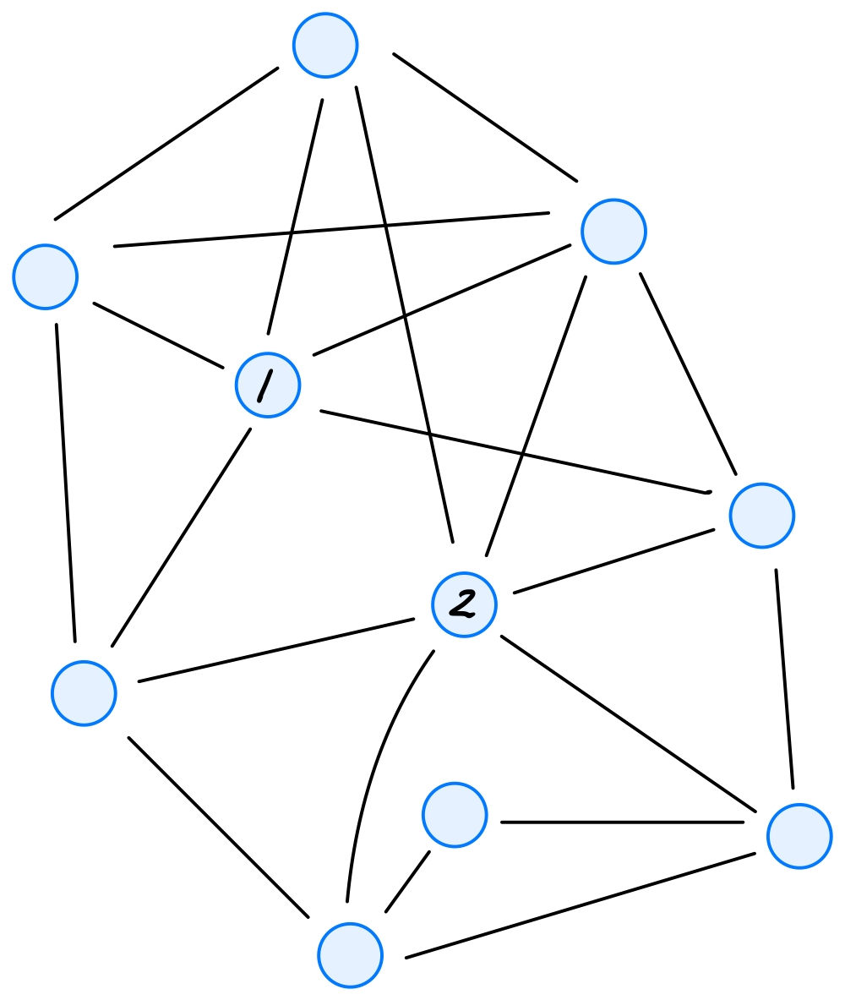
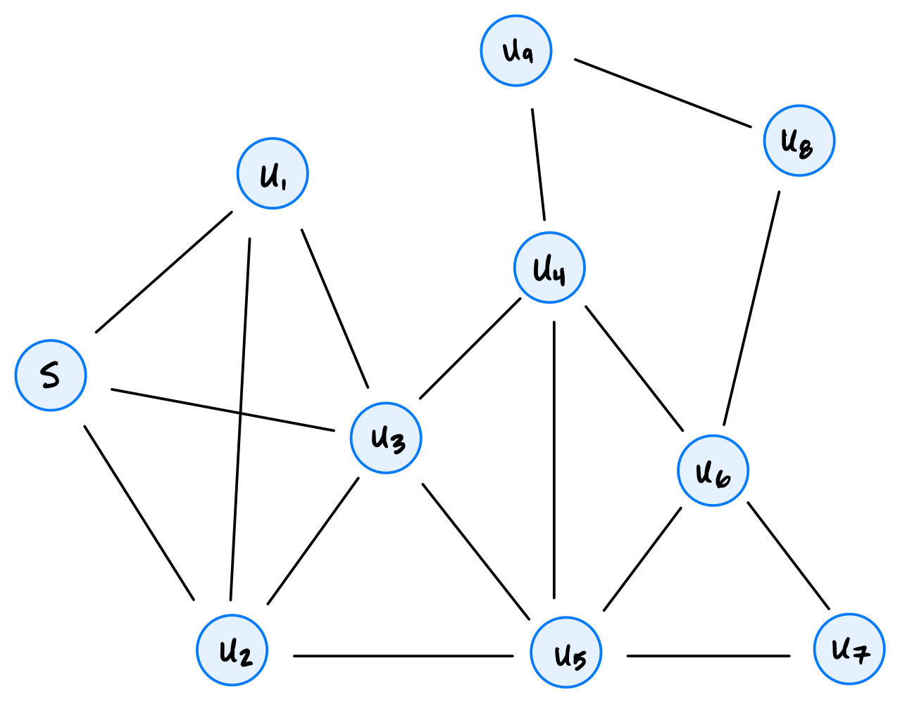
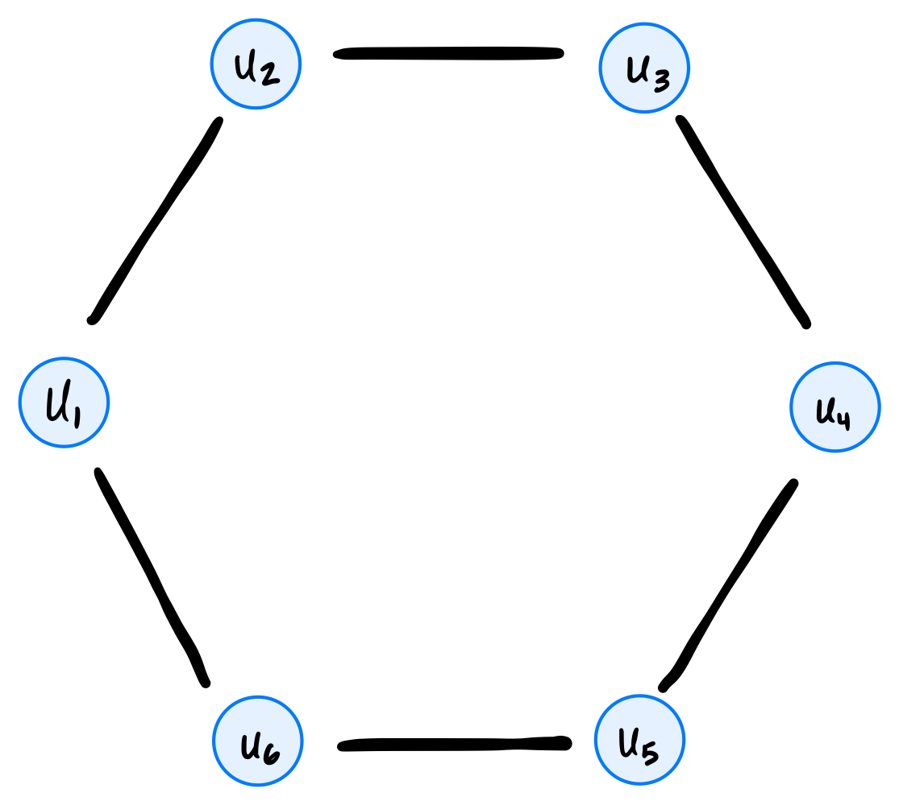
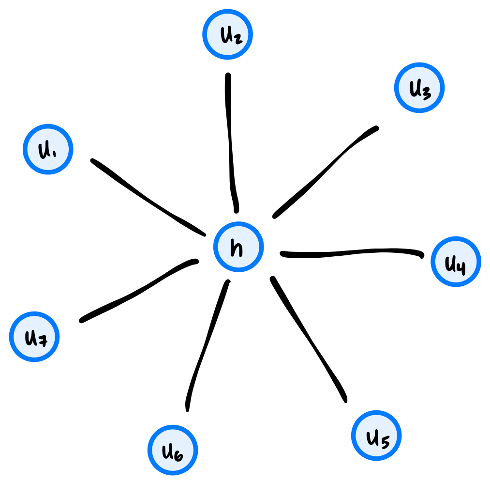

Quiz 06
Practice problems for topics on Quiz 06.
Tags in this problem set:
Problem #189
Tags: graph theory, lecture-10
What type of graph would be best for representing a network of friends on social media, where friendships are mutual? (i.e., if person A is person B's friend, person B is also person A's friend)
Solution
An undirected graph. Since friendship is symmetric, an edge between A and B has no direction.
Problem #190
Tags: graph theory, lecture-10
Consider the graph below

What is the out degree of node \(0\)?
Solution
Answer: 3. Node 0 has edges to 2, 4, and 5.
Problem #191
Tags: graph theory, lecture-10
What is the out-degree of node \(u\) in the graph shown below?

Solution
4. Node \(u\) has edges going out to three other nodes (the top, middle, and bottom nodes), plus the self-loop, which also counts as an edge out of \(u\).
Problem #192
Tags: graph theory, lecture-10
Let \(V = \{a, b, c, d\}\) and \(E = \{(a,b), (a,a), (a,c), (d,b), (c,a)\}\) be the nodes and edges of a directed graph. How many predecessors does node \(b\) have?
Solution
2, namely \(a\) (from the edge \((a, b)\)) and \(d\) (from \((d, b)\)), the nodes with an edge into \(b\).
Problem #193
Tags: graph theory, lecture-10
Suppose \(u\) is a node in a complete, undirected graph \(G = (V,E)\). What is the degree of \(u\)? Remember, an undirected graph is complete if it contains every possible edge.
Solution
\(|V| - 1\). In a complete graph, \(u\) has an edge to every other node, and there are \(|V| - 1\) of them. (In an undirected graph there are no self-loops, so \(u\) isn't a neighbor of itself.)
Problem #194
Tags: graph theory, lecture-10
Let \(G = (V, E)\) be a directed graph, and suppose \(u, v, w \in V\) are all nodes. True or False: if \(w\) is reachable from \(v\), and \(v\) is reachable from \(u\), then \(w\) is reachable from \(u\).
Solution
True.
There is a path from \(u\) to \(v\) and a path from \(v\) to \(w\). Following the first path and then the second gives a path from \(u\) to \(w\) (all of the edges point in the right direction, since each path follows its edges forward).
Problem #195
Tags: connected components, graph theory, lecture-10
Let \(C\) be a connected component in an undirected graph \(G\). Suppose \(u_1\) is a node in \(C\) and let \(u_2\) be a node that is reachable from \(u_1\). True or False: \(u_2\) must also be in the same connected component, \(C\).
Solution
True.
A connected component contains every node that is reachable from any of its nodes; it is a maximal set of nodes that can all reach one another. Since \(u_2\) is reachable from \(u_1\), it is in the same component as \(u_1\), which is \(C\).
Problem #196
Tags: graph theory, lecture-10
Let \(V = \{a, b, c, d, e, f, g\}\) and \(E = \{(a,g), (b,d), (d, e), (f, d)\}\). How many connected components does the undirected graph \(G =(V, E)\) have?
Solution
3. The connected components are \(\{a, g\}\), \(\{b, d, e, f\}\) (since \(d\) is connected to \(b\), \(e\) and \(f\)), and \(\{c\}\), which has no edges.
Problem #197
Tags: connected components, lecture-10
Consider the undirected graph \(G = (V, E)\) with
\(V = \{0, 1, 2, 3, 4, 5, 6, 7\}\)
\(E = \{(0, 1), (3, 6), (1, 5), (2, 4), (3, 4)\}\)
What are the connected components of \(G\)?
Solution
\(\{\{0, 1, 5\}, \{2, 3, 4, 6\}, \{7\}\}\). The edges \((0,1)\) and \((1,5)\) connect 0, 1, and 5. The edges \((2,4)\), \((3,4)\), and \((3,6)\) connect 2, 3, 4, and 6. Node 7 has no edges, so it is a connected component by itself.
Problem #198
Tags: connected components, lecture-10
Let \(G = (V,E)\) be an undirected graph with:
True or False: \(\{b, d, g\}\) is a connected component of this graph.
Solution
False. The connected components of this graph are \(\{a, e, f\}\) and \(\{b, c, d, g, h\}\).
Remember: a connected component has to contain all nodes reachable from any node in the component. While \(b\), \(d\), and \(g\) are all reachable from one another (and are “connected”), they do not form a connected component because there are more nodes reachable from this group: namely, \(h\) and \(c\).
Problem #199
Tags: connected components, lecture-10
Let \(G = (V,E)\) be an undirected graph with:
True or False: \(\{a, d, e\}\) is a connected component of this graph.
Solution
False.
Node \(c\) is also reachable from \(a\) via the edge \((a, c)\), so \(\{a, d, e\}\) isn't a maximal set of connected nodes. The connected component containing \(a\) is \(\{a, c, d, e\}\).
Problem #200
Tags: connected components, graph theory, lecture-10
Let \(G = (V, E)\) be an undirected graph, and suppose that \(u, v, \) and \(w\) are three nodes in \(V\). Suppose that \(u\) and \(v\) are in the same connected component, but \(u\) and \(w\) are not in the same connected component. True or False: it is possible that \(v\) and \(w\) are in the same connected component.
Solution
False.
If \(v\) and \(w\) were in the same connected component, then there would be a path from \(u\) to \(v\) and a path from \(v\) to \(w\), and putting them together gives a path from \(u\) to \(w\). That would put \(u\) and \(w\) in the same component, which contradicts what we were told. (In other words, the connected components split the nodes into non-overlapping groups.)
Problem #201
Tags: graph theory, lecture-10
An undirected graph has 5 nodes. What is the greatest number of edges it can have?
Solution
10. The most edges is when every pair of nodes is connected, and there are \(\binom{5}{2} = \frac{5 \cdot 4}{2} = 10\) pairs.
Problem #202
Tags: graph theory, lecture-10
You are told that a directed graph has 10 nodes. If the graph is fully connected with the exception of self loops (meaning, it has all possible edges except self loops) how many edges are there?
Solution
Answer: 90. Each of the 10 nodes has an edge to each of the other 9 nodes, giving \(10 \times 9 = 90\) edges. (Equivalently, \(10^2 = 100\) possible ordered pairs, minus the 10 self loops.)
Problem #203
Tags: graph theory, lecture-10
Let \(G\) be an undirected graph. Suppose that the degree of every node in the graph is greater than or equal to one. True or False: \(G\) must be connected.
Solution
False.
Take four nodes \(a, b, c, d\) with edges \((a, b)\) and \((c, d)\). Every node has degree 1, but the graph has two connected components, \(\{a, b\}\) and \(\{c, d\}\).
Problem #204
Tags: connected components, graph theory, lecture-10
Suppose \(G = (V, E)\) is an undirected graph. Let \(k\) be the number of connected components in \(G\). True or False: it is possible that \(k > |E|\).
Solution
True.
For example, a graph with 3 nodes and no edges has \(k = 3\) connected components (each node is its own component) but \(|E| = 0\).
Problem #205
Tags: graph theory, lecture-10
Let \(G = (V, E)\) be a directed graph with \(|V| > 1\). Suppose that every node in \(G\) is reachable from every other node. True or False: each node in the graph must have an out-degree of at least one and an in-degree of at least one.
Solution
True.
Pick any node \(u\), and let \(v\) be some other node (one exists because \(|V| > 1\)). Since \(v\) is reachable from \(u\), there is a path out of \(u\), and the first edge of that path leaves \(u\), so \(u\) has out-degree at least one. Similarly, since \(u\) is reachable from \(v\), the last edge of that path enters \(u\), so \(u\) has in-degree at least one.
Problem #206
Tags: graph theory, lecture-10
Let \(G = (V, E)\) be a connected, undirected graph with 16 nodes and 35 edges. What is the greatest possible number of edges that can be in a simple path within \(G\)?
Solution
15, since a simple path can't repeat a node, so it visits at most all 16 nodes, and a path through 16 nodes has 15 edges.
Problem #207
Tags: connected components, graph theory, lecture-10
Suppose an undirected graph \(G = (V,E)\) has two connected components, \(C_1\) and \(C_2\). Suppose that \(|C_1| = 4\) and \(|C_2| = 3\). What is the largest that \(|E|\) can possibly be?
Solution
Answer: 9. To get a graph with the most edges, make each connected component "fully connected". The most edges we can put in a component with 4 nodes is \(4 \cdot 3 / 2 = 6\), and the most we can put into a component with 3 nodes is \(3 \cdot 2 / 2 = 3\). Therefore, we can put at most 9 edges in this graph.
Problem #208
Tags: connected components, lecture-10
Suppose an undirected graph has 3 connected components and 7 nodes. What is the maximum number of edges it can have?
Solution
10. To have as many edges as possible, put 5 nodes in one component with every possible edge between them, and leave the other two nodes isolated as their own components. That's \(\binom{5}{2} = 10\) edges. Spreading the nodes out gives fewer, e.g., components of sizes 4, 2 and 1 have \(6 + 1 = 7\) edges.
Problem #209
Tags: graph theory, lecture-10
Suppose an undirected graph has 16 edges. What is the smallest number of nodes it can have?
Solution
7. An undirected graph with \(n\) nodes has at most \(\binom{n}{2} = \frac{n(n-1)}{2}\) edges. With 6 nodes that's 15, which is less than 16, but with 7 nodes it's 21, so 7 nodes is enough.
Problem #210
Tags: graph theory, lecture-10
A directed graph has 10 edges. What is the smallest number of nodes it can have?
Solution
4. A directed graph with \(n\) nodes can have an edge from every node to every node, including self-loops, so at most \(n^2\) edges. With 3 nodes that's 9, which is less than 10, but with 4 nodes it's 16.
Problem #211
Tags: graph theory, lecture-10
Suppose a directed graph has 5 nodes and 3 edges. What is the greatest possible degree of any node in the graph?
Solution
Remember that nodes can have self loops, and that the degree of a node with only a self-loop is 2. So a node that has a self loop and two other edges leaving it has a degree of 4.
Problem #212
Tags: graph theory, lecture-10
Consider the graph below

How many simple paths are there from \(0\) to \(5\)?
Solution
Answer: 3. They are \(0 \to 5\), \(0 \to 4 \to 5\), and \(0 \to 2 \to 4 \to 5\).
Problem #213
Tags: graph theory, lecture-10
Consider the graph below
True or False: there are infinitely many paths from \(0\) to \(5\). (Here, "path" means any path, not necessarily a simple path.)
Solution
False. Paths may repeat nodes, so there would be infinitely many paths from 0 to 5 if some path from 0 to 5 could go around a cycle. But this graph has no cycles (every edge goes "forward"), so no path can repeat a node, and the only paths from 0 to 5 are the three simple paths \(0 \to 5\), \(0 \to 4 \to 5\), and \(0 \to 2 \to 4 \to 5\).
Problem #214
Tags: connected components, lecture-10
Let \(G\) be an undirected graph, and suppose \(u\) and \(v\) are two nodes belonging to the same connected component of \(G\), with \(v\) being a neighbor of \(u\). That is, the edge \((u, v)\) is in \(G\).
Let \(G'\) be the graph obtained from \(G\) by deleting the edge \((u, v)\). True or False: \(u\) and \(v\) must still be in the same connected component of the new graph, \(G'\).
Solution
False.
If the edge \((u, v)\) is the only path between them, deleting it disconnects them. For example, if \(G\) has just the two nodes \(u\) and \(v\) and the single edge \((u, v)\), then after deleting it, \(u\) and \(v\) are each in their own connected component. (They do stay connected if some other path between them exists, but that isn't guaranteed.)
Problem #215
Tags: connected components, lecture-10
Suppose that every node in an undirected graph \(G\) with \(n\) nodes has degree 2.
True or False: \(G\) must have one connected component.
Solution
False.
Consider a graph with 6 nodes made up of two separate triangles. Every node has degree 2, but the graph has two connected components.
Problem #216
Tags: graph theory, lecture-10
Let \(G=(V,E)\) be an undirected graph with \(V=\{a,b,c,d,e\}\) and \(E=\{(a,b),(c,d),(e,a),(b,c),(e,d),(d,a)\}\).
True or False: it is possible to color the nodes of \(G\) with red and blue such that there are no edges between nodes of the same color.
Solution
False.
The edges \((a, d)\), \((d, e)\), and \((e, a)\) form a triangle. Whichever colors we give \(a\), \(d\), and \(e\), two of these three nodes must share a color, and they are joined by an edge.
Problem #217
Tags: graph theory, lecture-10
Let \(G = (V, E)\) be a directed graph with the property that there is a node \(u\) in \(G\) such that every other node in \(G\) is reachable from \(u\).
Let \(H \) be the directed graph obtained from \(G\) by reversing the direction of every edge. True or False: there must be a node \(v\) in \(H\) such that every other node in \(H\) is reachable from \(v\).
Solution
False. Consider the graph \(a \leftarrow b \rightarrow c\). Every node is reachable from \(b\). Now flip the edges to get the graph: \(a \rightarrow b \leftarrow c\). There's no node from which every other node is reachable.
Problem #218
Tags: graph representations, lecture-10
Let \(A\) be the adjacency matrix representing a directed graph with \(n\) nodes. What is the greatest possible sum of any row of \(A\)?
Solution
\(n\). Row \(u\) of \(A\) has a one for each edge leaving \(u\), so its sum is \(u\)'s out-degree. A directed graph may have self-loops, so \(u\) can have an edge to all \(n\) nodes, including itself, and the row can be all ones.
Problem #219
Tags: graph representations, lecture-10
Let \(A\) be the adjacency matrix representing an undirected graph with \(n\) nodes. What is the greatest possible sum of any row of \(A\)?
Solution
\(n - 1\). The sum of row \(i\) is the degree of node \(i\). Since an undirected graph has no self-loops, a node can be adjacent to at most the other \(n - 1\) nodes.
Problem #221 🌶️
Tags: aggregate analysis, lecture-11
Suppose a graph \(G = (V, E)\) is stored using an adjacency list representation in the variable adj_list. What is the time complexity of the below code?
for u, lst in enumerate(adj_list):
for v in lst:
print(u, v, "is an edge")Solution
\(\Theta(V + E)\).
It's tempting to multiply the two loops, but the inner loop runs a different number of times for each node: for node \(u\), it runs once for each neighbor of \(u\), i.e., len(adj_list[u]) times. So instead we add up the work node by node. For each node \(u\), the outer loop does \(\Theta(1)\) work, and the inner loop does \(\Theta(\text{degree}(u))\) work. The total is
since the lengths of all the adjacency lists add up to \(|E|\) in a directed graph and \(2|E|\) in an undirected one. The \(\Theta(V)\) term matters too: a node with no neighbors still costs \(\Theta(1)\) for the outer loop, so if there are few edges, the outer loop dominates. So the time is \(\Theta(V + E)\).
Problem #222 🌶️
Tags: aggregate analysis, lecture-11
Suppose the code below is run on a graph \(G = (V, E)\). What is its time complexity? You may assume that \(|E| \geq 1\).
for u in graph.nodes:
for v in graph.neighbors(u):
print(u, v)Solution
\(\Theta(V + E)\). The inner loop doesn't run the same number of times for every node, so we can't just multiply: for node \(u\), it runs \(\text{degree}(u)\) times. Adding up over all nodes, the outer loop does \(\Theta(1)\) work for each of the \(|V|\) nodes, which is \(\Theta(V)\), and the inner loop runs \(\sum_{u \in V} \text{degree}(u)\) times in total, which is \(2|E|\) for an undirected graph (each edge is seen from both ends) or \(|E|\) for a directed one (counting out-degrees). Either way, that's \(\Theta(E)\), so the total is \(\Theta(V + E)\). Neither term can be dropped in general: if there are few edges, looping over the nodes dominates, and if there are many, printing the edges dominates.
Problem #223 🌶️
Tags: graph representations, lecture-10
An isolated node in an undirected graph is a node that has no neighbors.
Suppose a graph \(G = (V, E)\) is represented using an adjacency matrix. What is the best possible worst-case time complexity of an efficient algorithm for computing the number of isolated nodes in the graph? State your answer as a function of \(|V|\) and \(|E|\) using asymptotic notation.
Solution
\(\Theta(V^2)\).
A node \(u\) is isolated exactly when row \(u\) of the adjacency matrix is all zeros. To check that, we have to look at the entries of that row until we find a one; if the node is isolated, there is no one to find, so we look at all \(|V|\) entries. Doing this for every node takes \(|V| \times \Theta(V) = \Theta(V^2)\) time in the worst case.
We can't do better. In the worst case, e.g., a graph with no edges at all, every node is isolated, and to be sure of that, an algorithm has to read every entry of the matrix (or, by symmetry, every entry on one side of the diagonal, which is still \(\Theta(V^2)\) entries): any entry it skips could be a one, which would make two nodes not isolated. Notice that the answer doesn't depend on \(|E|\): with an adjacency matrix, scanning a row takes \(\Theta(V)\) time no matter how many edges there are.
Problem #224
Tags: graph representations, lecture-10
An “isolated node” in a graph is a node that has no edges attached to it.
What is the worst case time complexity of an efficient algorithm that checks to see if a graph \(G = (V, E)\) has an isolated node? You should assume that the graph is represented as an adjacency list.
Solution
\(\Theta(V)\). A node is isolated exactly when its adjacency list is empty, which we can check in \(\Theta(1)\) time per node, so checking every node takes \(\Theta(V)\) time. In the worst case (no node is isolated), we have to check them all.
Problem #225
Tags: graph representations, lecture-10
Let \(A\) be the adjacency matrix of the graph shown below:

Let \(\vec{a}^{(1)}\) be the first row of \(A\) and \(\vec{a}^{(2)}\) be the second row of \(A\). What is \(\vec{a}^{(1)} \cdot \vec{a}^{(2)}\)? That is, what is the dot product between the first row of \(A\) and the second row of \(A\)? Your answer should be in the form of a number.
It may help to recall that the dot product between vectors \(\vec x = (x_1, \ldots, x_d)^T\) and \(\vec y = (y_1, \ldots, y_d)^T\) is equal to \(x_1 y_1 + x_2 y_2 + \ldots + x_d y_d\).
Solution
4. Each entry of the dot product is 1 exactly when a node is a neighbor of both node 1 and node 2, so the dot product counts their common neighbors. Node 1's neighbors are the top node, the two nodes on the upper left and upper right, the node on the right, and the node on the lower left; node 2 is adjacent to all of these except the upper-left node, so there are 4 common neighbors.
Problem #226 🌶️
Tags: graph theory, lecture-10
The adjacency matrix of a directed graph with nodes \(u_1, \ldots, u_8\) is shown below:
True or False: there is a path from node \(u_1\) to node \(u_8\).
Solution
True.
Reading each row as the edges leaving that node, we can follow the path \(u_1 \to u_2 \to u_3 \to u_4 \to u_5 \to u_6 \to u_7 \to u_8\).
Problem #227
Tags: breadth first search, lecture-11
Suppose you run a BFS on the graph below, however, the BFS is modified so that any time a node is popped from the queue, the message Node popped!!! is printed to the screen.
How many times is the message printed?
Solution
Answer: 6. Every node reachable from the source is added to the queue exactly once and popped exactly once. This graph is connected, so all 6 nodes are popped, no matter which node the BFS starts at.
Problem #228
Tags: breadth first search, lecture-11
Suppose you are performing a BFS on the following graph, starting at node 0. In which of the following orders are the nodes visited, assuming that the BFS algorithm produces neighbors in numerical order?

Solution
0, 1, 3, 5, 4, 2. Visiting 0 adds 1 and 3 to the queue. Visiting 1 adds 5. Visiting 3 adds 4. Visiting 5 adds nothing new (4 is already pending). Visiting 4 adds 2. Finally 2 is visited.
Problem #229
Tags: breadth first search, lecture-11
Suppose a breadth first search is run on the graph below using node \(d\) as the source. Adopt the convention that a node's neighbors are produced in alphabetical order.

What is the node popped from the queue after node \(g\)?
Solution
\(e\). The nodes are popped in the order \(d, f, q, r, g, e, v\). Popping \(d\) adds \(f, q, r\); popping \(f\) adds \(g\); popping \(q\) adds \(e\); popping \(r\) adds \(v\). So the queue is then \(g, e, v\), and \(e\) comes right after \(g\).
Problem #230
Tags: breadth first search, lecture-11
Consider running a breadth-first search (BFS) on the graph shown below, using node \(s\) as the source and adopting the convention that neighbors are produced in ascending order by label.

How many nodes will be popped from the queue before node \(u_8\) is popped?
Solution
9. BFS pops \(s, u_1, u_2, u_3, u_5, u_4, u_6, u_7\) and \(u_9\), and then \(u_8\). (\(u_5\) is discovered from \(u_2\) before \(u_4\) is discovered from \(u_3\), and \(u_8\) is discovered from \(u_6\) after \(u_9\) is discovered from \(u_4\).)
Problem #231
Tags: breadth first search, lecture-11
Define a circle graph with \(n\) nodes to be an undirected graph \(G = (V, E)\) with nodes \(u_1, u_2, \ldots, u_n\) and edges \((u_1, u_2), (u_2, u_3), \ldots, (u_{n-1}, u_n)\), along with one additional edge \((u_n, u_1)\) completing the cycle. An example of a circle graph with 6 nodes is shown below:

What is the time complexity of breadth-first search when run on a circle graph with \(n\) nodes? State your answer as a function of \(n\) using asymptotic notation.
Solution
\(\Theta(n)\). BFS takes \(\Theta(V + E)\) time. A circle graph has \(|V| = n\) nodes and \(|E| = n\) edges, so this is \(\Theta(n + n) = \Theta(n)\).
Problem #232
Tags: breadth first search, lecture-11
Suppose a “2-chain” graph with \(n\) nodes is constructed by taking \(n\) nodes labeled 1, 2, \(\ldots\), \(n\), and, for each node \(u\), making a directed edge from \(u\) to nodes \(u + 1\) and \(u + 2\) (if they are in the graph).
For example, such a graph with \(n = 7\) looks like:

Suppose BFS is run on a 2-chain graph with \(n\) nodes, using node 1 as the source. What is the time taken as a function of \(n\)? State your answer using asymptotic notation.
Solution
\(\Theta(n)\). BFS takes \(\Theta(V + E)\) time. Each node has at most two outgoing edges, so there are fewer than \(2n\) edges, and \(\Theta(V + E) = \Theta(n + 2n) = \Theta(n)\).
Problem #233
Tags: breadth first search, lecture-11
The code below is a modified version of BFS shown in class. This modification has a single addition: a print statement. A comment in the code indicates where the print statement is located.
def bfs(graph, source):
"""Start a BFS at `source`."""
status = {node: 'undiscovered' for node in graph.nodes}
status[source] = 'pending'
pending = deque([source])
while pending:
u = pending.popleft()
for v in graph.neighbors(u):
print("here!") # <--- this is the print statement
if status[v] == 'undiscovered':
status[v] = 'pending'
pending.append(v)
status[u] = 'visited'Suppose this modified BFS is run on the following graph, starting at node \(a\).
How many times will "here!" be printed? Your answer should be an exact number.
Solution
10. BFS only reaches \(a\)'s connected component: \(a, b, c, d, e, f\). It has 5 edges, \((a, b)\), \((b, c)\), \((c, d)\), \((a, e)\) and \((b, f)\), and in an undirected graph each edge is explored twice (once from each endpoint), so "here!" is printed \(2 \times 5 = 10\) times.
Problem #234
Tags: breadth first search, lecture-11
Consider the following modification of BFS, with an added print statement:
from collections import deque
def modified_bfs(graph, source):
"""Start a BFS at `source`."""
status = {node: 'undiscovered' for node in graph.nodes}
status[source] = 'pending'
pending = deque([source])
while pending:
u = pending.popleft()
for v in graph.neighbors(u):
if v == 9:
print("Here!") # <-- this is the added print statement
if status[v] == 'undiscovered':
status[v] = 'pending'
pending.append(v)
status[u] = 'visited'Consider running this algorithm on the following graph, starting at node \(1\):

How many times will "Here!" be printed?
Solution
2. The print runs each time \(9\) comes up as a neighbor of a popped node. In this directed graph, the only edges into \(9\) are \((7, 9)\) and \((8, 9)\), and \(7\) and \(8\) are each popped once, so "Here!" is printed twice.
Problem #236 🌶️
Tags: breadth first search, lecture-11
Consider calling full_bfs on a directed graph, and recall that full_bfs will make calls to bfs until all nodes have been marked as visited.
True or False: the number of calls made to bfs depends on the order in which graph.nodes produces the graph's nodes. That is, if nodes are produced in a different order, the number of calls to bfs may be different.
Solution
True.
Consider the graph with the single edge \((a, b)\). If \(a\) is produced first, bfs(a) discovers \(b\) and only one call is needed. If \(b\) is produced first, bfs(b) cannot reach \(a\), so a second call is needed.
Problem #237 🌶️
Tags: breadth first search, lecture-11, time complexity
Suppose an undirected graph with \(n\) nodes satisfies the property that every node has degree \(n/2\). What is the time complexity of running full BFS on this graph?
Solution
\(\Theta(n^2)\). Full BFS takes \(\Theta(V + E)\) time. The sum of the degrees is \(n \cdot n/2\), and each edge is counted twice in this sum, so there are \(n^2/4\) edges. So the time is \(\Theta(n + n^2/4) = \Theta(n^2)\).
Problem #238
Tags: breadth first search, lecture-11
Suppose a connected, undirected graph \(G\) has \(n\) nodes, half of which are “red” and half of which are “blue”. Each red node shares an edge with \(\log_2 n\) blue nodes, and the only edges in the graph are between red and blue nodes.
What is the time complexity of BFS when run on \(G\)? Your answer should be in asymptotic notation and in terms of \(n\), in the simplest terms possible.
Solution
\(\Theta(n \log n)\). BFS takes \(\Theta(V + E)\) time. Every edge joins a red node to a blue node, and each of the \(n/2\) red nodes has \(\log_2 n\) of them, so there are \(E = \frac{n}{2} \log_2 n\) edges. So the time is \(\Theta(n + \frac{n}{2}\log_2 n) = \Theta(n \log n)\).
Problem #239 🌶️
Tags: graph theory, lecture-10
A “hub node” in a graph is a node that has an edge to all the other nodes in the graph.
What is the worst case time complexity of an efficient algorithm that checks to see if a graph \(G = (V,E)\) has a hub node? You should assume that the graph is represented as an adjacency list. State your answer in asymptotic notation and in terms of \(V\) and \(E\).
Note: in studying, you might have come across a problem in the practice bank about “hub and spoke” graphs. This question is related, but not the same!
Solution
\(\Theta(V)\).
A node \(u\) is a hub exactly when it has an edge to each of the \(V - 1\) other nodes, that is, when its adjacency list has \(V - 1\) entries. We don't need to look at what's in the list to check this: we can get its length in \(\Theta(1)\) time (e.g., with len(adj[u])). So the algorithm loops over the nodes and checks whether len(adj[u]) == V - 1 for each one. That's \(\Theta(1)\) time per node, and in the worst case (when there is no hub) it checks all of them, for \(\Theta(V)\) time in total.
Notice that the time doesn't depend on \(E\), because we never look at the edges themselves. An algorithm that scanned every adjacency list would take \(\Theta(V + E)\) time, which can be as large as \(\Theta(V^2)\).
Problem #240
Tags: breadth first search, connected components, lecture-11
Suppose you are running a full BFS on a graph. You are using the following code from lecture to run your full BFS, with some small modifications to include two new print statements:
from collections import deque
def bfs(graph, source, status=None):
"""Start a BFS at `source`."""
if status is None:
status = {node: 'undiscovered' for node in graph.nodes}
status[source] = 'pending'
pending = deque([source])
# while there are still pending nodes
while pending:
u = pending.popleft()
for v in graph.neighbors(u):
# explore edge (u, v)
print('foo') # <- this is new
if status[v] == 'undiscovered':
status[v] = 'pending'
# append to right
pending.append(v)
status[u] = 'visited'
def full_bfs(graph):
status = {node: 'undiscovered' for node in graph.nodes}
for node in graph.nodes:
if status[node] == 'undiscovered':
print("bar") # <- this is also new
bfs(graph, node, status)After running the full BFS, you find that the word “foo” has been printed 2 times, and the word “bar” has been printed 5 times. Assuming that the graph has 1 edge (but an unknown number of nodes), which of the following is true about the graph in question?
Solution
There are 5 connected components, and it is undirected. "bar" is printed once each time full_bfs starts a new BFS, and in an undirected graph each new BFS starts in a new connected component, so there are 5 connected components. "foo" is printed once each time an edge is explored. In an undirected graph, each edge is explored twice (once from each endpoint), while in a directed graph it is explored only once. Since there is 1 edge and "foo" was printed 2 times, the graph is undirected.
Problem #242
Tags: aggregate analysis, breadth first search, lecture-11, time complexity
Consider the following modification of BFS, where there are two new lines of code. What is the time complexity in terms of \(|V|\) and \(|E|\)?
from collections import deque
def foo(graph):
status = {node: 'undiscovered' for node in graph.nodes}
for u in graph.nodes:
if status[u] == 'undiscovered':
bar(graph, u, status)
def bar(graph, source, status):
status[source] = 'pending'
pending = deque([source])
# while there are still pending nodes
while pending:
u = pending.popleft()
for v in graph.neighbors(u):
# explore edge (u,v)
if status[v] == 'undiscovered':
status[v] = 'pending'
pending.append(v)
for z in graph.nodes:
print(z)
status[u] = 'visited'Solution
\(\Theta(V + VE)\). Without the two new lines, this is a full BFS, which takes \(\Theta(V + E)\) time. The new inner loop runs once each time an edge is explored, and each time it takes \(\Theta(V)\) time. By an aggregate analysis, edges are explored \(\Theta(E)\) times in total, so the new lines add \(\Theta(VE)\) time. The total is \(\Theta(V + E + VE) = \Theta(V + VE)\). (We can't drop the \(V\) term: when there are no edges, the code still takes \(\Theta(V)\) time.)
Problem #243 🌶️
Tags: aggregate analysis, breadth first search, lecture-11
Consider the code below, which is a modification of the code for bfs given in lecture:
from collections import deque
def modified_full_bfs(graph):
status = {node: 'undiscovered' for node in graph.nodes}
for node in graph.nodes:
if status[node] == 'undiscovered':
modified_bfs(graph, node, status)
def modified_bfs(graph, source, status=None):
"""Start a BFS at `source`."""
if status is None:
status = {node: 'undiscovered' for node in graph.nodes}
status[source] = 'pending'
pending = deque([source])
# while there are still pending nodes
while pending:
u = pending.popleft()
for v in graph.neighbors(u):
# explore edge (u,v)
if status[v] == 'undiscovered':
status[v] = 'pending'
# append to right
pending.append(v)
for z in graph.nodes: # <----- new line!
print(z, status[z]) # <----- new line!
status[u] = 'visited'Notice the two new lines; these lines print all node statuses any time that an undiscovered node has been found.
What is the time complexity of modified_full_bfs? State your answer in asymptotic notation in terms of the number of nodes, \(|V|\), and the number of edges, \(|E|\). You may assume that the graph is represented using an adjacency list, and that it is connected.
Solution
\(\Theta(V^2)\).
First, the newly-added code (the for z in graph.nodes loop), takes \(\Theta(V)\) time each time the loop is encountered. The crux is: how many times is that loop encountered?
This loop is encountered every time we add a node to the queue (except for the root node, which we add to the queue right at the beginning of BFS). Since this is a connected graph, each node will get added to the pending queue exactly once, meaning that this new code is encountered exactly \(V-1\) times (the \(-1\) is subtracting the root node; the loop isn't encountered when we change it to pending).
Since the new code takes \(\Theta(V)\) time each time it's encountered, and since it's encountered \(\Theta(V)\) times, the total time complexity of the loop is \(\Theta(V^2)\).
You might wonder why the time complexity isn't \(\Theta(VE)\), since the new code is within the loop that “explores” each edge in the graph, and we know that it makes a total of \(2|E|\) iterations when the graph is undirected. This is true, but recognize that the new code only executes when the if-statement before it is True, and this will happen on only a subset of the \(2|E|\) iterations. In fact, it will happen exactly \(|V|-1\) times, as we argued above.
Problem #244 🌶️
Tags: aggregate analysis, lecture-11
A “hub and spoke” graph with \(n\) nodes consists of a single “hub” node \(h\) along with \(n - 1\) “spoke” nodes, \(u_1, \ldots, u_{n-1}\) and \(n - 1\) edges from the hub node \(h\) to each of the spoke nodes. For example, a “hub and spoke” graph with 8 nodes looks like the below:

What is the worst case time complexity of an optimal algorithm which takes as input an arbitrary graph \(G = (V, E)\) and determines if it is a “hub and spoke” graph? You may assume that the graph is represented as an adjacency list and that the total number of edges in the graph can be retrieved in constant time.
Solution
\(\Theta(1)\)
Here's the algorithm. First, check that the number of edges is \(n - 1\), where \(n = |V|\). If not, it's not a “hub and spoke” graph. This takes constant time, by the assumption that the total number of edges can be retrieved in constant time.
Next, take an arbitrary node and compute its degree (in \(\Theta(1)\) time, since the graph is represented as an adjacency list). If the degree is \(n - 1\), then the graph is a “hub and spoke” graph, and this is the hub.
If the degree is not \(n - 1\), but instead 1, this node might be a spoke. Check the degree of its neighbor as described above to see if it's a hub.
If you see a degree that's neither 1 nor \(n - 1\), then the graph is not a “hub and spoke” graph.
Problem #249
Tags: graph theory, lecture-10
An undirected graph \(G = (V, E)\) has 23 nodes and 2 connected components. What is the smallest number of edges it can have?
Solution
21. A connected component with \(k\) nodes needs at least \(k - 1\) edges (as many as a tree has). So if the components have \(k_1\) and \(k_2\) nodes, where \(k_1 + k_2 = 23\), the graph has at least \((k_1 - 1) + (k_2 - 1) = 23 - 2 = 21\) edges, and making each component a tree gives exactly 21.
Problem #250
Tags: connected components, graph theory, lecture-10
An undirected graph with 20 nodes and 30 edges has three connected components: \(A\), \(B\), and \(C\). Connected component \(A\) has 7 nodes. What is the smallest number of edges that \(A\) can have?
Solution
6. \(A\) is connected and has 7 nodes, so it needs at least \(7 - 1 = 6\) edges, and a tree on its 7 nodes has exactly 6. The other 24 edges can go in \(B\) and \(C\), which have 13 nodes between them (e.g., a \(B\) with 12 nodes has room for up to 66 edges).
No 🌶️ problems in this set.